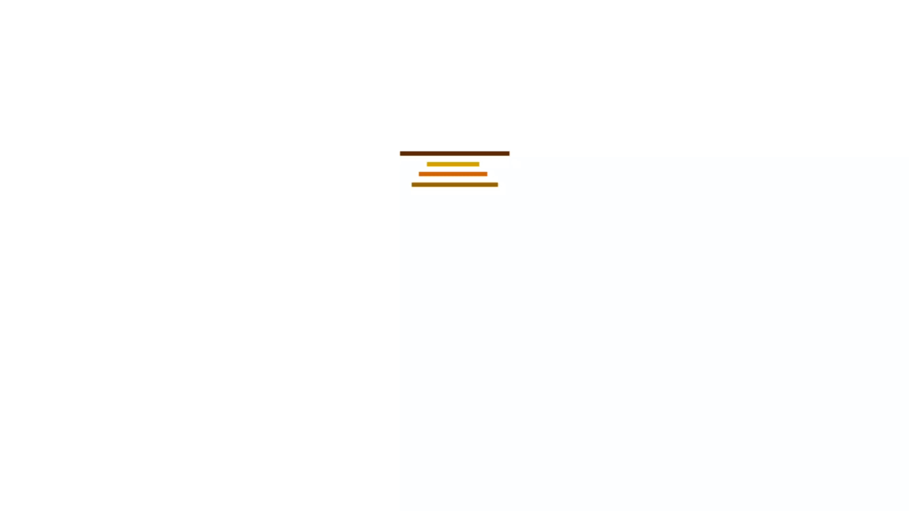
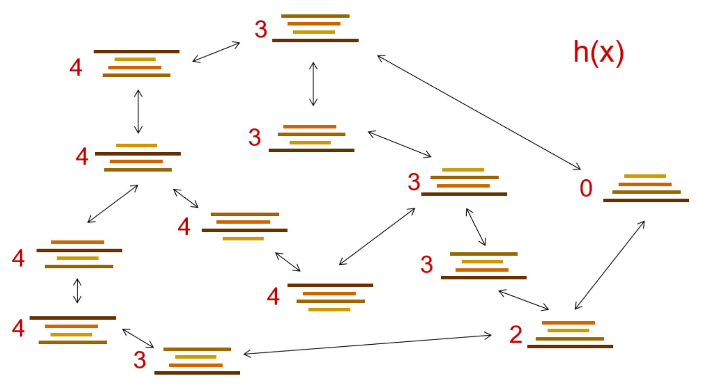
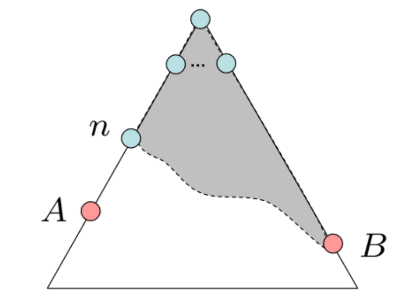

启发式搜索是人工智能中一种搜索算法，它利用额外信息或启发式方法来更准确地决定首先探索哪些路径。
通过使用领域特定知识来驱动搜索，启发式搜索算法可以迅速排除不相关或不太有前途的选择，使搜索集中在最可靠的选择上。
假设有n个煎饼叠放在一起，并且可以使用铲子来颠倒顶部的k个煎饼的顺序，其中2<=k<=n。然后煎饼排序问题询问需要多少这样的“前置颠倒(prefix reversals)”才能对任意堆栈进行排序。
这里有一个与煎饼问题相关的游戏。你应该自顶向下按照从小到大的顺序将这些元素排序。
排序步数: 0
对于从1到n的排列σ，令f(σ)表示将σ转换为按序排列所需的最少 前置颠倒次数，令f(n)表示对于所有σ在对称区块的Sn中的最大f(σ)。 我们证明f(n)<=(5n+5)/3，并且对于n是16的倍数时，f(n)>=17n/16。 此外，如果要求每个整数参与偶数个前置颠倒，则相应的函数 g(n)满足3n/2-1<=g(n)<=2n+3。

fucntion TREE-SEARCH(problem, strategy) return a solution, or failure
initialize the search tree using the initial state of problem
loop do
if there are no candidates for expansion then
return failure
choose a leaf node for expansion according to strategy
if the node contains a goal state then
return the corresponding solution
else expand the node and add the resulting nodes to the search tree
end
我们可以使用额外信息来做出更准确的决策吗？
接下来，让我们了解什么是 启发策略（heuristics） 。
启发策略（ Heuristics ）是:

例如，煎饼问题的启发策略可以是仍处于错误位置的最大煎饼的编号。
贪婪搜索是一种人工智能搜索算法，试图从给定的起点到目标找到最有前景的路径。它优先考虑看起来最有前景的路径，而不论它们是否实际上是最短路径。该算法通过评估每条可能路径的成本，然后扩展具有最低成本的路径来工作。这个过程重复进行，直到达到目标。
贪婪搜索的策略是扩展您认为最接近目标状态的节点。
所以贪婪搜索的启发策略是什么？
Heuristic:估计每个状态到最近目标的距离
贪婪搜索的情况
A*搜索结合了 UCS 和 Greedy。
启发函数 h 是 可采纳（ admissible / optimistic ） 那么: 0≤h(n)≤h*(n) 其中 h*(n) 是到最近目标的真实成本。
想出可采纳的启发函数是A*算法实际使用中的重点
A*搜索在找到的到目标的最佳路径的成本小于或等于任何其他路径的最佳可能成本时终止。由于一个可靠的启发函数永远不会高估成本，所以当找到目标顶点时，只需将其估计成本设为实际成本，将目标顶点放入优先队列即可。这确保了A*搜索在搜索过程中不会错过最佳解决方案。 算法在弹出队列中具有最小成本的目标顶点时终止。
假设有两个节点 A 和 B。A 是最优目标节点。B 是次优目标节点。
Proof:

考虑B在边缘
A的某个祖先节点n也在边缘
n将会在B之前被扩展
f(n)=g(n)+h(n)
f(A)=g(A)+h(A) 因为A是目标状态， h(A)=0
所以 f(A)=g(A)
同理可得 f(B)=g(B)
A是最优的，B是次优的。g(A)<g(B)，所以f(A)<f(B)
f(n)<=f(A)，所以f(n)<f(B)
结果是n将在B之前被扩展
n可以代表A的任何祖先
A*算法主要朝着目标方向扩展，但同时也保有一定的余地以确保寻找到最优解。
这是一个迷宫游戏。您可以选择迷宫中的两个浅灰色方块作为起点和终点（绿色代表起点，红色代表终点）。这个演示可以自动计算最短路径。